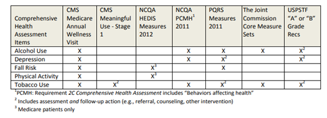
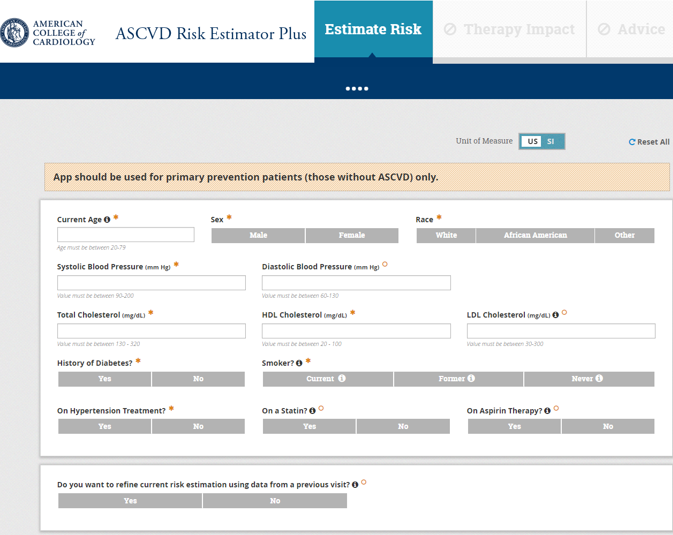
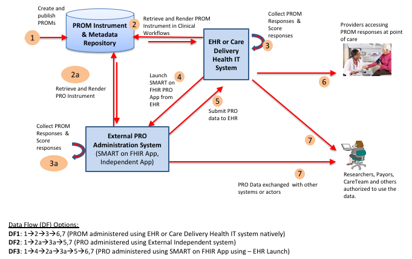
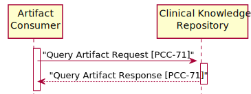
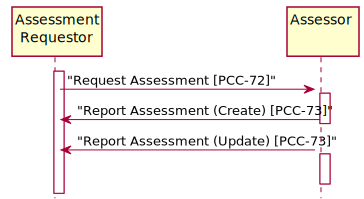

IHE ACDC Implementation Guide
0.1.0 - CI Build
IHE ACDC Implementation Guide
0.1.0 - CI Build
IHE ACDC Implementation Guide, published by Integrating the Healthcare Enterprise (IHE). This is not an authorized publication; it is the continuous build for version 0.1.0). This version is based on the current content of https://github.com/IHE/ACDC/ and changes regularly. See the Directory of published versions
Assessments are the principle means by which numerous forms of data regarding physical function, mental/cognitive status, social determinants of health, and patient reported outcomes are collected. These are variously known as assessments, screening instruments, scales, scores, questionnaires
Many assessment instruments have been automated, but there are thousands of these instruments. HealthMeasures1 has nearly 750 measures, the Alcohol and Drug Abuse Institute at the University of Washington2 lists over 1031 screening instruments, and a search of PubMed3 results in nearly 26,000 articles on different instruments used for patient assessment.
In the US, more than a half dozen quality improvement or recognition programs require documenting or reporting specific information about patients that contain elements that can be obtained from health assessments4. These are shown in figure 15.4-1 below.

Figure 15.4-1 Quality Related Assessments
Many of these instruments can be implemented using technology, as they are simple forms or questionnaires. Some data in these instruments might be automatically populated by the EHR system. However, because there are so many instruments, and so many providers of the instruments, it is challenging to integrate these instruments into provider workflows.
Assessment instruments are tools which enable clinicians to assess a patient’s clinical condition based on certain evaluations or observations performed with the patient. Evaluations may include the recording of clinical data that is captured by other means (e.g., measurement tools) or by simply answering questions based on the clinician or patient’s knowledge. The result is an assessment that will provide both the collected data and an assessment of what that means for the condition being assessed.
Assessments may be used for screening, diagnosis, treatment determination, or reporting of outcomes. Assessment instruments are used to gather data on a wide variety of clinical conditions. One well known example of an assessment instrument is the American College of Cardiology’s ASCVD Risk Estimator5. This instrument provides an estimation of a patients’ 10-year ASCVD risk. It appears in the figure below.

Figure 15.4.1-1 An Assessment Instrument
Both the gathered data in the assessment and the resulting assessment can be used for later evaluation, either for clinical care or to support health research.
As a clinical tool used in the delivery of care, assessment instruments often go through evaluation and validation, and include training materials on how the assessment is to be performed6. Changes to the questions asked, or the possible responses allowed results in a different diagnostic instrument, which may or may not perform as well as the validated instrument. Therefore, developers of assessment instruments often accompany them with intellectual property controls that ensure they are implemented appropriately. Many assessment instruments were originally implemented as paper forms, but with the growth of the web, these are now often implemented as electronic forms. Because of the intellectual property controls, instrument developers may restrict online use to a validated implementation.
This results in a challenge for healthcare providers because each instrument they choose to use may have different user interfaces, different initiation protocols and delivery mechanisms, and require different ways to be integrated into their electronic health record systems. The purpose of this profile is to provide a way for these instruments to be readily integrated into the EHR.
Because many of these instruments rely on data that is already known to the EHR, there is further value in enabling a connection between the EHR and the system delivering the assessment instrument content so that information that is already known to the EHR can be supplied to the assessment instrument delivery system.
In this profile, the assessment instrument is represented as a FHIR Questionnaire resource. The questionnaire resource is designed to support collection of data based on answers from end users and enables detailed control over presentation of the instrument. The responses to the assessment instrument are represented in the FHIR QuestionnaireResponse resource. This resource provides the list of questions, answers and additional data (e.g., assessments, scores, et cetera) determined from the answers to the questions.
The figure below illustrates the abstract implementation model for working with assessments for patient reported outcomes[9] as published in the HL7 FHIR Patient Reported Outcomes Implementation Guide. While this model was developed for patient reported outcome assessments, it can be applied to other forms of assessment as well.

Figure 15.4.1-2 Abstract Model for Basic Questionnaires
The ACDC profile focuses on steps 2 through 5 of the model and implements these steps using four different actors. The first use case in this profile, corresponding to step 2 in the diagram above, is to identify the assessment instrument that the healthcare provider wants to integrate into their workflow. The PROM Instrument and Metadata repository in this diagram would support assessment instrument retrieval by implementing the Clinical Knowledge Resource Repository Actor. The External PRO Administration System or EHR or Care Delivery Health IT system could then retrieve instruments by implementing the Artifact Consumer actor. This enables the assessment instrument to be selected by the healthcare provider.
The second use case in this profile addresses steps 3 through 5 in Figure 15.4.1-2, which is the execution of the assessment instrument.
This profile makes no assumptions about how assessment results are used after they are returned to the Assessment Requester application. The results may be stored in the provider’s health IT system, they may be used to produce other information that is stored in the patient’s chart, data may be extracted from the assessment to produce a care plan, they may be discussed with the patient, et cetera. There is no responsibility on the receiving system to persist or store the results or otherwise make them accessible for future use, they may simply be discarded after being produced and acted upon. There may be some requirements in the providers jurisdiction that requires that the data used in the assessment be persisted in some way, that is outside of the scope of this profile7.
resource returned by the Assessor actor.
This profile does require that the Assessment Requester actor expose a FHIR endpoint that supports the QuestionnaireResponse create operation. That does not create a commitment on the Assessment Requester actor to expose endpoints supporting the read or search operations. It is simply a convenience used to enable a stateless application to be launched and return results from its operations.
The sections below describe the use cases supported by the IHE ACDC Profile.
In the first use case, a care provider organization is seeking information about assessment instruments to address a specified condition or health concern. Their goal is to identify instruments and eventually acquire instruments which could be used to capture information essential to management of the care of patients having that condition. Their EHR will be able to perform the assessment once it has been acquired.
This use case is supported by the IHE PCC 71 Query Artifact transaction.

Figure 15.4.2.1-1: Use Case #1 Process Flow in ACDC Profile
The Query Artifact transaction is used to request lists of one or more artifacts that match the users search criteria. The metadata for the artifacts matching the criteria is returned so that the user can further explore these artifacts to consider acquisition of them for use in their health information system.
After identifying an artifact for implementation, the user can either retrieve the full artifact so that it can be implemented in their health information system, or a link to where it has been externally implemented so that they integrated it the collected data into their system, which is described in more detail in 15.4.2.2 Use Case #2 Executing the Assessment Instrument.
In the second use case, the care provider organization wants to assess a patient using the retrieved or identified assessment in their health IT system and be able to collect the results of this assessment for a given patient. This process may be initiated through the user’s EHR, a separate application or device, a patient portal, et cetera.
In this use case, there are several possible ways the assessment data can be collected.
The provider’s Health IT system can invoke a separate application that can interpret the assessment instrument and collect data on the patient, returning it to the health IT solution.
A separate application can be launched either manually by the provider or through an integration method not specified by this guide. This application will integrate with the provider’s Health IT system to determine which assessment is to be performed, for which patient and which encounter. It will then collect the data and return it the EHR attached to the correct patient and encounter.
The provider’s Health IT system can initiate data capture on its own forms, using the data describing the assessment instrument. To implement this option, the health IT system needs to correctly interpret instrument description, collect the data and do what it deems necessary with the data that was collected (e.g., create observations or other resources, store a questionnaire response, et cetera). Because this case can be completely managed by the provider’s Health IT system when the questionnaire items are provided, it is not addressed within this profile.
During the execution of this use case, the software performing the assessment may collect data already known about the patient that is stored in the health IT system that will receive the assessment results. When the EHR Launch option is used, this data can be accessed via FHIR resources from the launching EHR system.
This use case is supported by the IHE PCC 72 Request Assessment, and the IHE PCC 73 Report Assessment transactions.

Figure 15.4.2.2-1: Use Case #2 Process Flow in ACDC Profile
In this use case, the first step is to associate the assessment instrument with a context available in the health IT system (shown below as the Assessment Requestor) that will receive the assessment results. The context at a minimum establishes the subject of the assessment: the patient being assessed, and the user information that might be associated with any provenance for the assessment. The context might also include the provider requesting the assessment, and the encounter in which the assessment is performed.
This first step may be implemented via process in which the healthcare provider orders an assessment be performed or may be initiated via a SMART on FHIR EHR Launch flow. At the end of this step, the patient or provider is presented with a user interface that enables them to complete the assessment.
The next step performs the assessment. During this step, the assessor may collect additional data from the receiving health IT system to facilitate completion of the assessment. The software performing the assessment may connect to the user’s health IT system in order to perform queries (e.g., using the IHE QEDm or PDQm profile, or through other methods).
Upon completion of the assessment, the assessor records the results of the assessment in a QuestionnaireResponse resource stored by the Assessment Requester actor and sends it to the Assessment Requestor.
For more details see:
Health Assessments in Primary Care, September 2003, AHRQ ↩
Use of Risk Assessment Tools to Guide Decision-Making in the Primary Prevention of Atherosclerotic Cardiovascular Disease: A Special Report From the American Heart Association and American College of Cardiology ↩
However, we might recommend simply persisting the QuestionnaireResponse ↩
IG © 2020+ Integrating the Healthcare Enterprise (IHE). Package IHE-ACDC-Profile#0.1.0 based on FHIR 4.0.1. Generated 2020-05-03
Links: Table of Contents |
QA Report
Links: Table of Contents |
QA Report |
Version History  |
|
 |
Propose a change
|
Propose a change